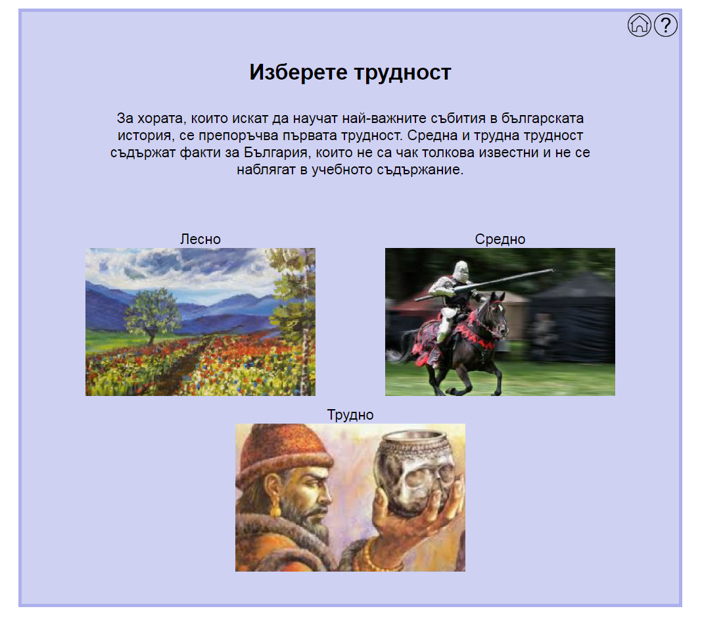
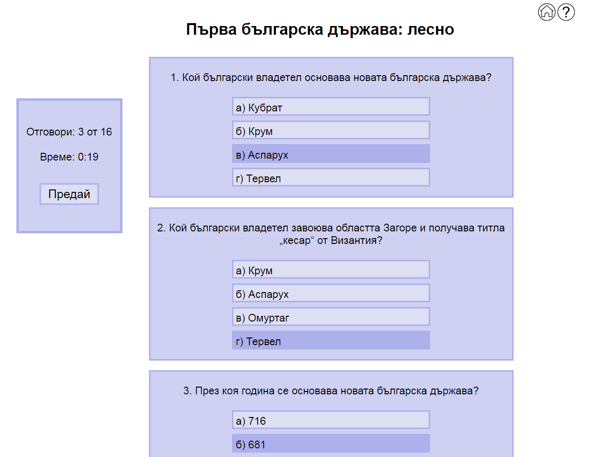
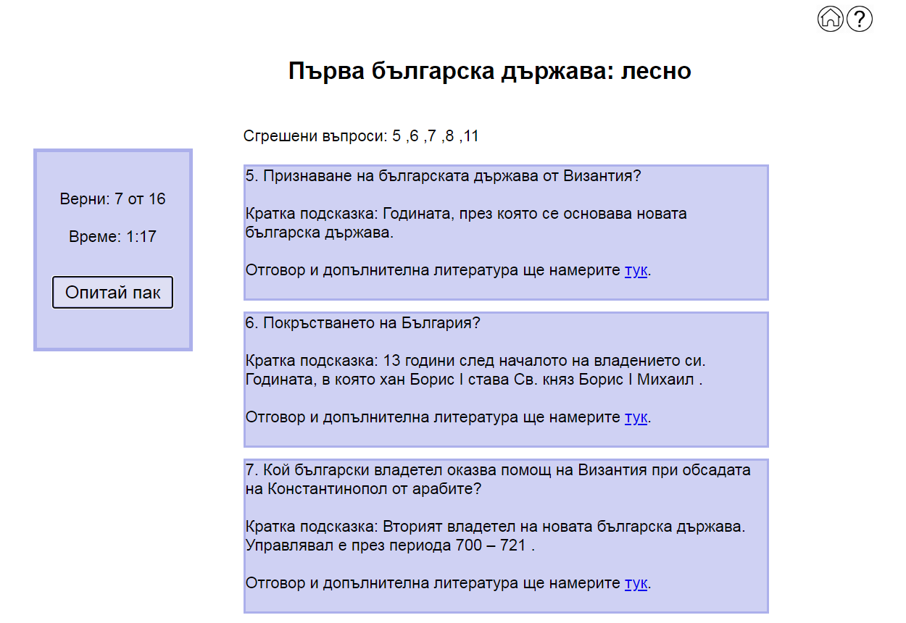

Това е началния панел на приложението. Има 4 различни епохи с тяхното наименование над снимката. Потребителя натиска желаната епоха, за която иска да попълни тест.
След избиране на епоха системата изпраща потребителя на страницата за избиране на трудност. Всяка една трудност е с дума и подобаваща снимка символизирана. След натискане на желаната трудност се зарежда страницата с тестовите въпроси.
Това е страницата с тестовите въпроси в центъра, подредени един под друг. Всеки въпрос е с отделна рамка. В лявата страна има рамка с броя попълнени въпроси/отговори, времето от началото на теста до момента и бутон за предаване на теста. Потребителя не може да предаде теста без да е попълнил всички въпроси (системата дава съобщение). В горния десен ъгъл има 2 бутона. Единият със символ на къщичка е “Home” бутон за връщане към началната страница. При натискане на бутона системата изисква потвърждение и предупреждава потребителя за загуба на резултата до момента, ако желае да се върне обратно към началната страница. Другия бутон е с въпросителен знак. Това е ръководството на потребителя.
След предаване на теста се зарежда страницата с крайния резултат на потребителя. В центъра на екрана на първи ред са изписани всички сгрешени въпроси в последователност. Всеки един сгрешен въпрос има собствена рамка с информация за условието на въпроса, кратка подсказка и линк към допълнителна литература. В левия ъгъл е изписано в рамка информация за колко верни отговора има потребителя от общия брой въпроси, времето, което му е отнело, за да го попълни и бутон “Опитай пак” за започване на теста от начало.